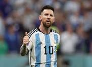
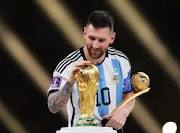
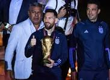
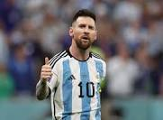
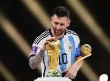
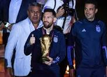

Lionel Messi
Lionel Messi
Footballer
- Overview
- News
- Stats
- Videos
 





Top stories
 Eurosport
Eurosport About
Lionel Andrés Messi, also known as Leo Messi, is an
Argentine professional footballer who plays as a
forward for Ligue 1 club Paris Saint-Germain and
captains the Argentina national team. Wikipedia
Born: 24 June 1987 (age 35 years),
Rosario,
Argentina
Spouse: Antonela Roccuzzo (m. 2017)
Height:1.69m
Current Team:
Paris Saint-Germain F.C. (#30 /
Forward),
Forward)